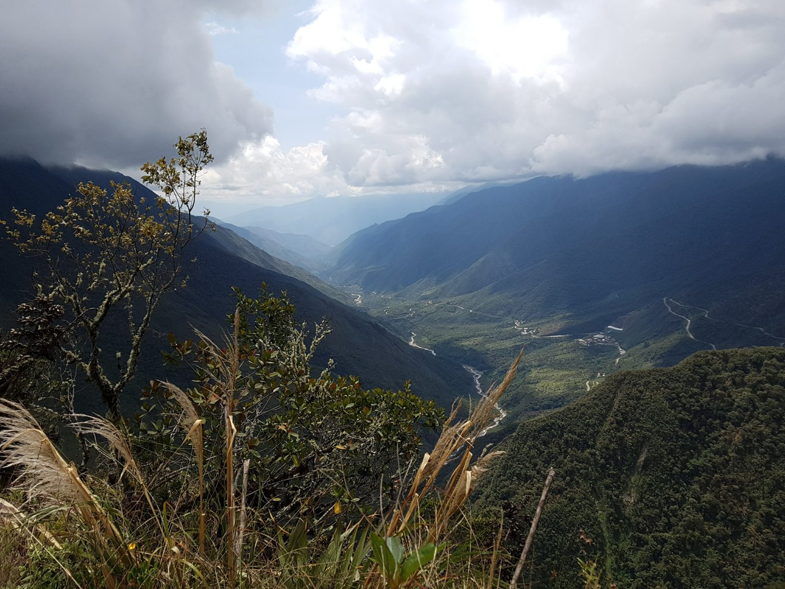
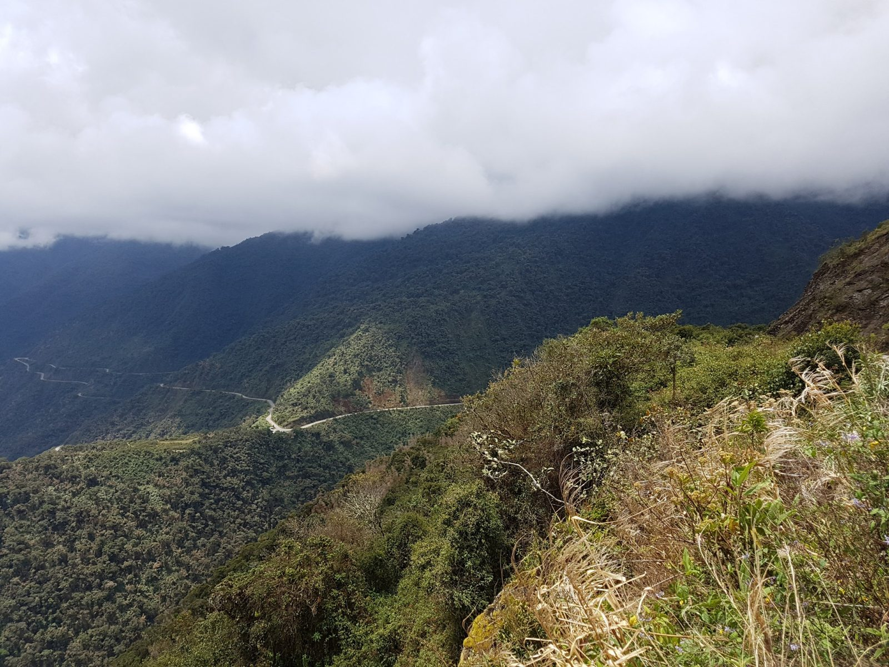
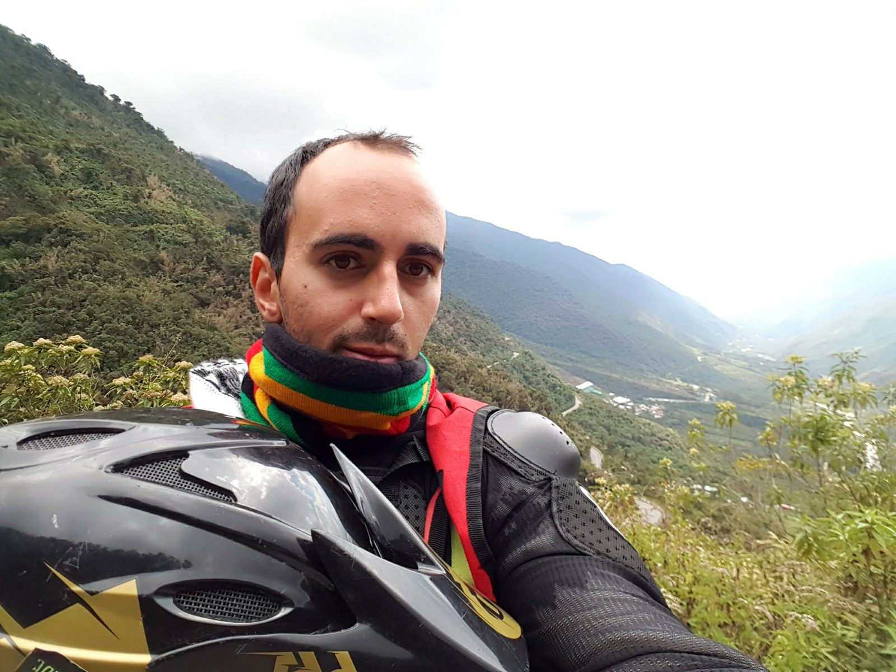
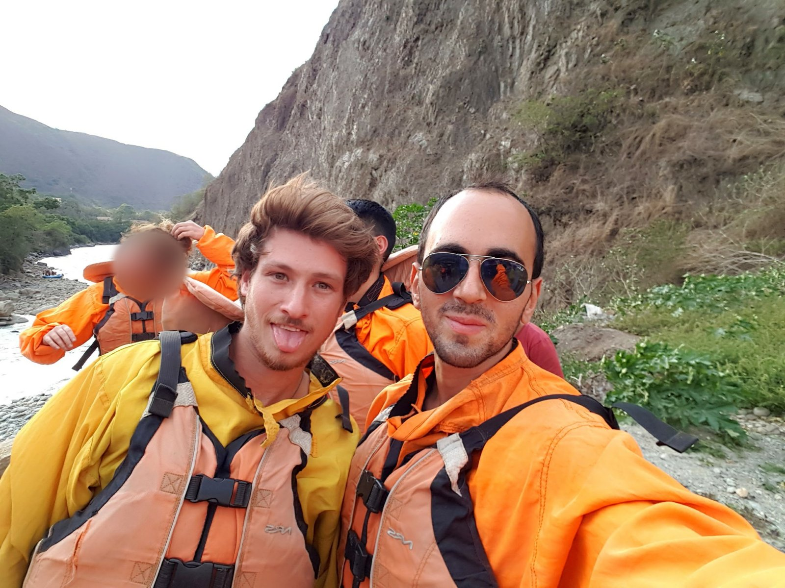
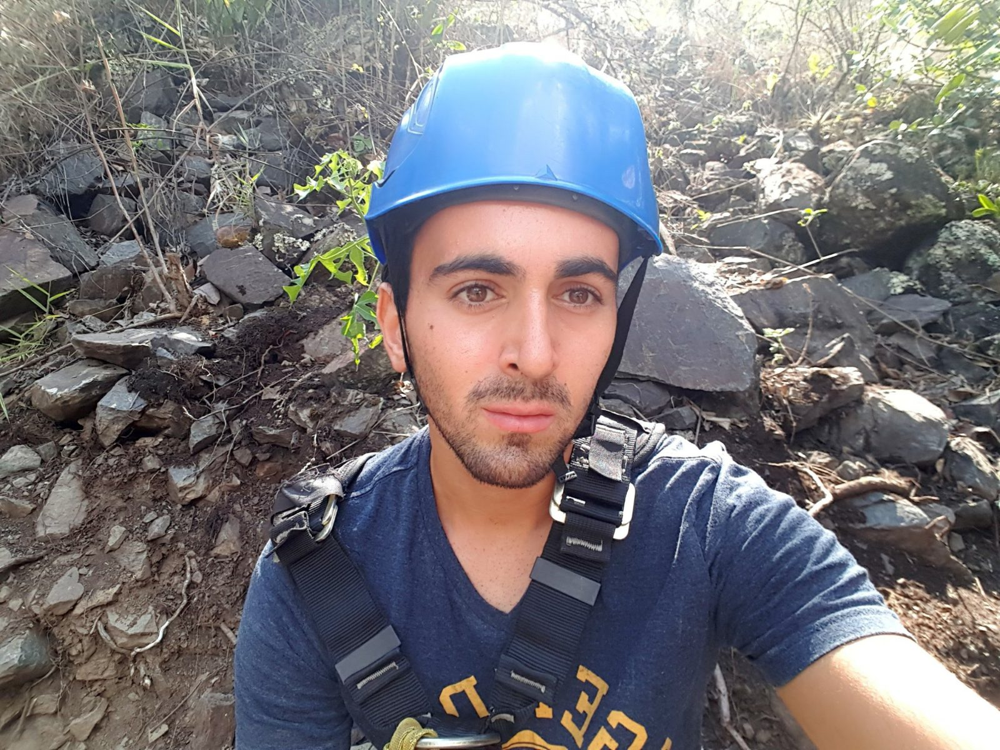
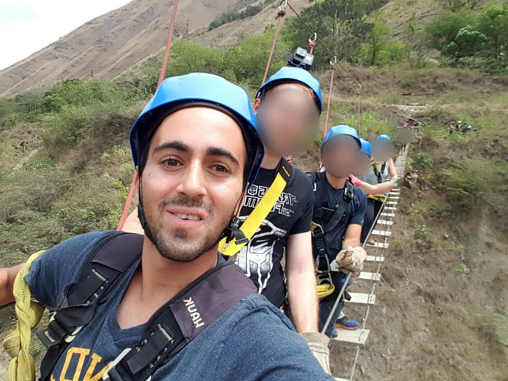
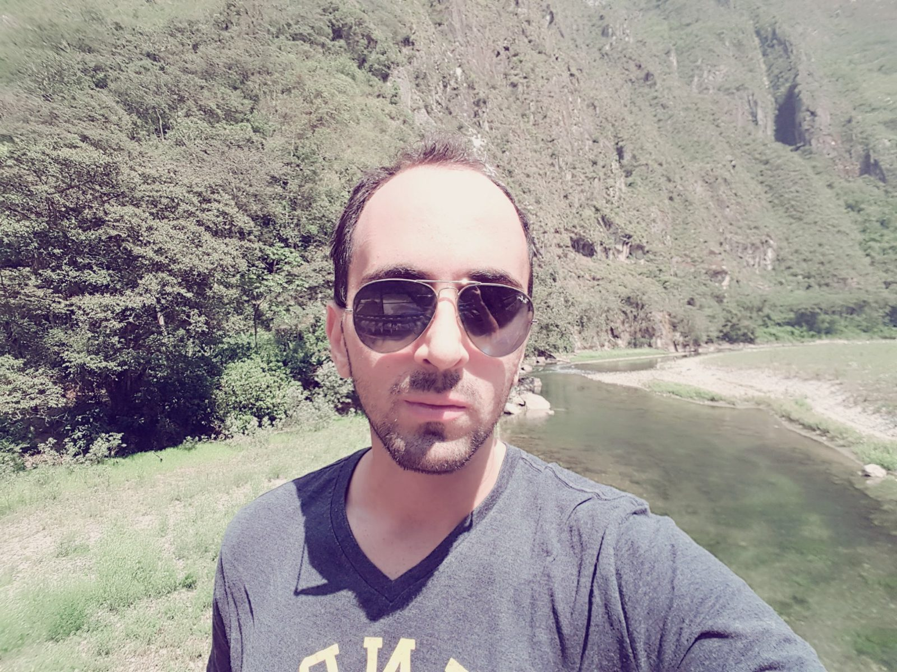
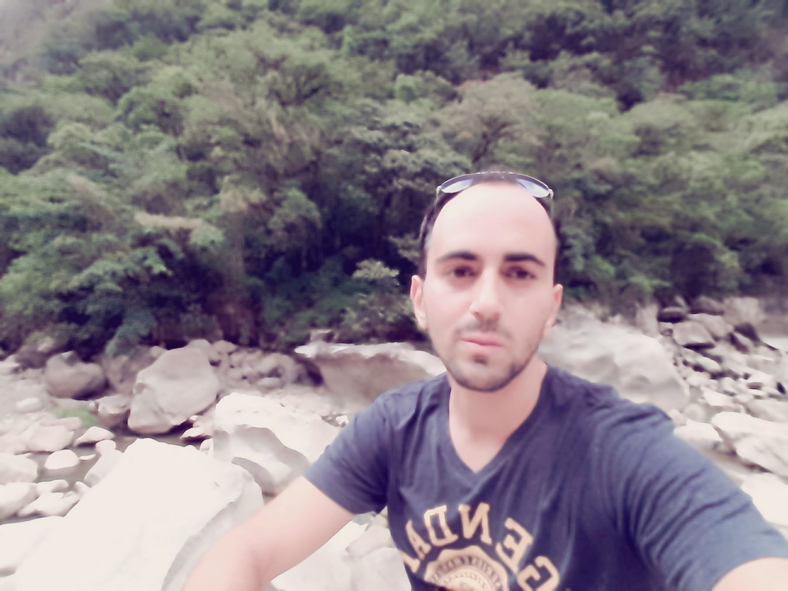

South America · Peru · Inca Jungle
Inca Jungle, October 4 and 5, 2017
After Cusco I took the Inca Jungle route towards Machu Picchu: a mix of downhill cycling, rafting, a zipline course and walking, instead of a bus or train. This chapter covers what my photos show from October 4 and 5, 2017. I do not remember the agency, the price or how many days the tour was, so I do not state them. The next chapter is Aguas Calientes, and then Machu Picchu.
October 4: the downhill ride
The ride was on a paved road down a green valley, in a helmet and body armour. I do not remember exactly where it started or how long it took. The photos are from about 12:55 to 13:33. The first two show how steep and wide the valley is, with the road winding far below.



October 4: rafting
Later that day, at 16:26, I took a selfie in a raft jacket and life vest. Google Photos places it near Santa María, by the river (the location is an estimate). I am with a friend, who agreed to the photo being published. The raft had other people in it, so I blurred the face of the woman behind us. On the left you can see the river, and behind us is the dry hillside above it.

One operator's 4 day, 3 night itinerary (Marvelous Peru, published February 25, 2026): day 1 is Cusco to Abra Málaga, a downhill bike ride and a night in Santa María. Day 2 is a walk to Santa Teresa, with optional rafting. Day 3 is an optional zipline, the hydroelectric plant and the walk along the railway to Aguas Calientes. Day 4 is Machu Picchu and the return, by train in some packages. The order and optional parts depend on the operator and the weather, and rafting only runs when the river is safe.
The same operator describes the ride as starting above 4,000 m and ending at about 1,200 to 1,500 m, roughly 50 to 60 km and 3 to 4 hours with stops, mostly a continuous descent on paved road, with bikes, helmets and protective gear provided (Marvelous Peru, published March 4, 2026). It rates the risk as low if you do not ride too fast. That is an operator's own page and not an independent safety assessment, so check recent reviews of the specific agency. My own day was different: I had rafting on the same day as the ride, which does not match that itinerary.
October 5, morning: helmet and harness
The next day, October 5, I did a zipline course. At 09:03 I took a selfie in a blue helmet and a harness, sitting among rocks. I left out the group photo from 09:30. The harness, the helmet and the rope bridge are what a zipline course looks like, but I do not remember the name of the place, how many lines there were or what it cost.

At 10:35 I took a selfie on a rope bridge hanging over a slope, with the group behind me in blue helmets and harnesses. One of the helmets has a camera on top. I blurred the faces of everyone else on the bridge. The photo shows what the course looks like: narrow wooden planks, ropes on both sides, and gloves and harnesses for everyone.

October 5, afternoon: the river
At 13:15 I took a selfie in sunglasses next to a calm green river, with steep forest behind me. About two hours later, between 15:11 and 15:13, I took a few selfies on a rocky riverbed in a narrow gorge. Some of them are blurry. I do not remember where either place was. The river and the gorge look like the Urubamba valley, but I cannot confirm it, so I do not name the exact spot.


On the standard Inca Jungle route, the last stretch before Aguas Calientes is a walk from the Hidroeléctrica station along the railway and the Urubamba River. One guide gives it as about 10 to 11 km, 2.5 to 3.5 hours at a moderate pace, easy to moderate, with no ticket needed. It advises starting before 15:00 to avoid walking in the dark, staying on the side of the track, listening for trains and not wearing headphones (Marvelous Peru, published March 2, 2026). Another guide adds that kiosks and ATMs are limited, so carry soles, water and snacks (Scratch Your Mapa, updated October 27, 2025).
I did not find a source that says whether walking on the railway is officially permitted today, and I could not confirm whether the route is open right now, so check with your agency before you go.
What I do not remember
The agency and price, how many days the tour was, which days I walked, where I slept in Santa María or Santa Teresa, the name of the zipline place and the exact route on the walk, and how I reached Aguas Calientes. I would rather leave these out than guess.
Previous: Cusco. Next: Aguas Calientes.